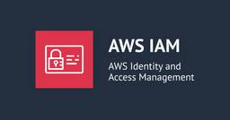
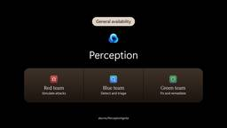
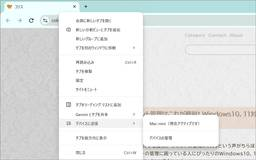
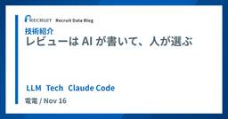
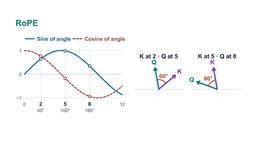

直近1週間の人気フィード
はてなブックマーク数を元に新着優先で並べ替え

[アップデート] AWS STS の GetScopedCredentials で権限と有効期間を絞った認証情報を作ってみた 26 DevelopersIO
26 DevelopersIO
AWS STS に追加された GetScopedCredentials を AWS CLI から呼び出し、ID を変えずに権限と有効期間がどう絞られるのかを検証しました。また、絞り込みを重ねたときの上限や必要な許可も確かめてみました。
1日前

マイクロソフト、AIによるサイバー攻撃にAIエージェントで対抗する新サービス「Microsoft Perception」提供開始 85 Publickey
Publickey
マイクロソフトは日本時間11月18日未明に開幕した年次イベント「Microsoft Ignite 2026」で、AIによるサイバー攻撃に対抗するためのAIエージェントによる新サービス「Microsoft Perception」の提供開始を発...
3日前

［速報］マイクロソフト、コーディング用AIモデルとして高性能かつ低価格「MAI Code 2」「MAI Code 2 Flash」発表 71 Publickey
マイクロソフトは日本時間11月18日未明に開幕した年次イベント「Microsoft Ignite 2026」で、同社が開発したコーディング用AIモデルのフラグシップで高性能かつ低価格を売り文句とする「MAI Code 2」と、さらに安価な「...
4日前

Windowsのフォント管理はこれが便利！ Windows10, 11対応、オープンソースの無料アプリ -tuna-fonts 47 コリス
コリス
当ブログでフォントを紹介する度に、「フォントの管理が、、、」という声がちらほら聞こえます。そんなフォントの管理に困っている人にぴったりのWindows10, 11対応のオープンソース無料アプリを紹介します。 インストール […]
4日前

軽量なマイクロVMでネイティブよりアプリを高速起動できる「Hyperlight-Unikraft」登場 84 Publickey
Cloud Native Computing Foundationは、Linuxアプリケーションを再コンパイルや再ビルドすることなくそのまま、Unikernelのような軽量かつセキュアな実行環境で仮想マシンによる堅牢な隔離環境で実行できるM...
5日前

Node.jsとnpmをWebブラウザ上で実行可能にする「OpenVessel」、神戸ソフトがオープンソースで公開 104 Publickey
神戸ソフトは、Webブラウザ上でNode.jsとパッケージマネージャのnpm、AstroなどのNode.jsに対応したフレームワークなどが実行できる「OpenVessel」をオープンソースで公開しました。 OpenVesselは、Webブラ...
5日前

Web制作者は要チェック！ 新しいユニバーサルセレクタ、アプリのインストールを要求できるinstall要素など、Chrome 158で追加された6つのCSSとUIの新機能 12 コリス
昨日アップデートされたChrome 158に追加された、CSSとUIに関する新しい機能を紹介します。 今回のアップデートで注目は、新しいユニバーサルセレクタ「::highlight(*)」、Webアプリのインストールを要 […]
3日前

レビューは AI が書いて、人が選ぶ 84 Recruit Data Blog
はじめに データ推進室で SaaS プロダクトのデータ基盤の開発・運用を担当している電電です。 この記事では、開発現場で活用している AI
6日前
［速報］PostgreSQL互換のサーバレスでOLTPとOLAP両対応を実現する「Microsoft Fabric HorizonDB」パブリックプレビュー 21 Publickey
マイクロソフトは日本時間11月18日未明に開幕した年次イベント「Microsoft Ignite 2026」で、PostgreSQL互換のサーバレスデータベース「Microsoft Fabric HorizonDB」のパブリックプレビュー版...
4日前

Cloudflare、AI専用でタブやテーマや拡張などない軽量ヘッドレスブラウザ「Kitesurf」、オープンソースで公開 76 Publickey
Cloudflareは、AIエージェントが操作することを想定した軽量のヘッドレスブラウザ「Kitesurf」をオープンソースで公開したと発表しました。 Kitesurf is now open source on GitHub under ...
6日前

マイクロソフト、AIが生成したアプリを企業内で安全に実行するランタイム「Copilot Managed Runtime」正式リリース 19 Publickey
マイクロソフトは日本時間11月18日未明に開幕した年次イベント「Microsoft Ignite 2026」で、AIが生成したアプリなどを企業内で安全に実行するための基盤となる「Copilot Managed Runtime」の正式リリース...
3日前

［速報］AIがOracle DBからPostgreSQLへの移行を支援、「Azure Database Migration Service」プレビュー 16 Publickey
マイクロソフトは日本時間11月18日未明に開幕した年次イベント「Microsoft Ignite 2026」で、Azure Database Migration Service （Azure DMS）におけるOracle DBからPostg...
4日前

マイクロソフト、クラウドやオンプレミスのデータベースを一元管理する「Database Hub」正式リリース。AIエージェントによる運用監視の自動化も 8 Publickey
マイクロソフトは日本時間11月18日未明に開幕した年次イベント「Microsoft Ignite 2026」で、Microsoft Azureやオンプレミス、他社クラウドにあるデータベースなど、管理者が権限を持つデータベースを自動的に一覧表...
2日前

AIエージェントを騙す：一見安全だが危険なGitHubリポジトリをAIエージェントにセットアップさせてみた（インターンシップ体験記） 4 NTT docomo Business Engineers' Blog
NTT docomo Business Engineers' Blog
こんにちは、NTTドコモグループの現場受け入れ型インターンシップに参加した、中里と下坂です。 本記事では、私たちが参加した、「攻撃者視点に立ち攻撃技術を研究開発するセキュリティエンジニア」ポストでの取り組みについて紹介します。 NTTドコモグループのセキュリティ業務や、Offensive Securityに興味を持っている方へのご参考になれば幸いです。 なお本記事は、将来の脅威を理解し、防御策の検討やセキュリティ向上に役立てるための情報提供を目的としており、攻撃や不正利用を助長する意図は一切ありません。安全に配慮し、すべての検証は隔離されたサンドボックス環境内にて実施しています。また、悪用を防…
1日前

Windows Server 2028がパブリックプレビュー公開。Microsoft FoundryなどAIによる推論の実行基盤へと拡張 13 Publickey
マイクロソフトは日本時間11月18日未明に開幕した年次イベント「Microsoft Ignite 2026」で、次期サーバ向けOSとなるWindows Server 2028のパブリックプレビュー公開を発表しました。 企業内のAI推論基盤へ...
3日前

［速報］マイクロソフト、PostgreSQL互換のミッションクリティカル向けデータベースサービス「Azure HorizonDB」正式リリース 12 Publickey
マイクロソフトは日本時間11月18日未明に開幕した年次イベント「Microsoft Ignite 2026」で、PostgreSQL互換のミッションクリティカル向けデータベースサービス「Azure HorizonDB」の正式リリースを発表し...
4日前
PostgreSQL 19リリース延期の背景。β4で多くの新機能取り下げが発生、原因はAIによるコードレビューか 42
Publickey
オープンソースのリレーショナルデータベース「PostgreSQL」は、先週木曜日（2026年11月12日）に最終リリース候補版となるPostgreSQL 19 RC2が公開され、予定では今週の11月19日に正式リリースとなる見通しです。 そ...
6日前

t9g.medium と t4g.medium の性能を Next.js ビルド・OpenSSL・dd で実測してみた 3 DevelopersIO
Amazon EC2 の t9g.medium と t4g.medium で Next.js ビルド・OpenSSL・dd を実測しました。ビルド時間の中央値は t4g.medium の 34.9 秒に対し t9g.medium は 12.2 秒でした。CPU 情報と CloudWatch のバースト関連メトリクスも確認しています。
1日前

最新のAIがぶっ飛んでる！ たった97KBのHTMLファイル1つだけで水中世界を探検できる -Abyssal Garden 16 コリス
先週Anthropicからリリースされた「Claude Fable 5.2」を使って、たった97KBのHTMLファイルだけで水中世界を泳ぎ回れる「Abyssal Garden」を紹介します。 使用しているのはHTMLファ […]
5日前

［速報］Azure SQL Databaseをローカルで実行する「Azure SQL Database local development container」パブリックプレビュー 4 Publickey
マイクロソフトは日本時間11月18日未明に開幕した年次イベント「Microsoft Ignite 2026」で、Azure SQL Databaseをローカルで実行する「Azure SQL Database local developmen...
4日前

Understanding Positional Embeddings in Modern LLMs 3 Ahead of AI
The Methods Behind How LLMs Represent Token Positions
6日前